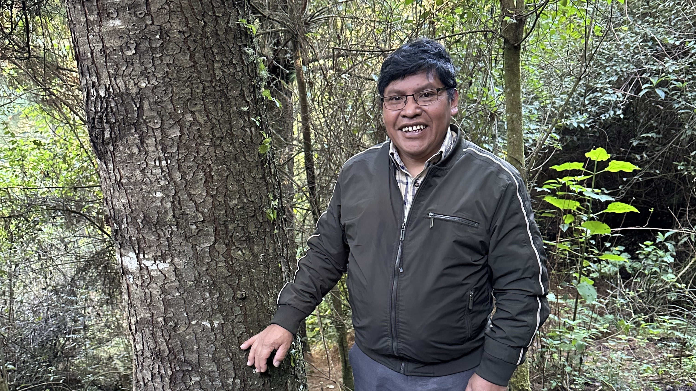
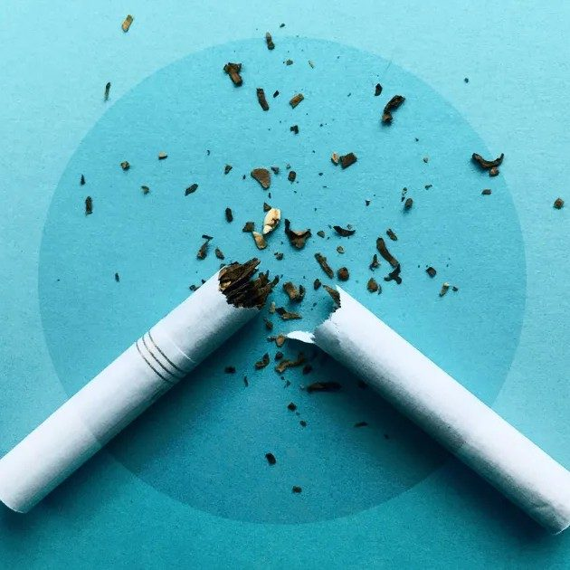
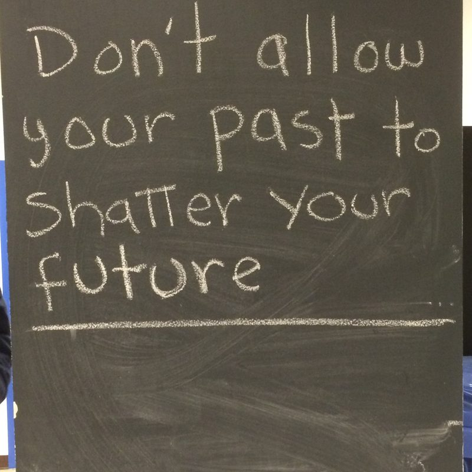

For the last fifteen years, Stan has been reporting and producing audio stories for local, national, and international news; launching, shaping, editing, and sound designing new shows; and teaching writing and story structure to audio novices. He specializes in turning complicated investigations into compelling narrative documentaries that have real-world impact and win awards.
Along the way, Stan wrote a surprisingly influential article about why audio doesn't go viral, and also gave a significantly less influential talk about why radio storytelling is, in fact, bad.
Recently, he has reported and produced from Latin America for NPR, Marketplace, the BBC, and Radio Ambulante Studios' La Ruta del Sol: a Spanish-language investigative series about the death of a whistleblower in an international bribery scandal. Before that, Stan was a senior reporter and producer at Reveal from the Center for Investigative Reporting.
Recent



Highlights

How the US government misses the deadly threat of rightwing extremism, with the Investigative Fund's David Neiwert.
Finalist, Livingston Award for Young Journalists, National Reporting.

A fight over how we remeber "The Last Conquistador."
Winner of a Peabody Award, an Online Journalism Award for Excellence in Audio Digital Storytelling, and an NABJ Salute to Excellence Award.

The dangerous shipyards that supply the U.S. Navy, with CIR's Jennifer Gollan.
Finalist, Online News Association's Al Neuharth Innovation in Investigative Journalism Award.

What the disappearance of Rick Garay says about U.S. border policy.
Winner, Online News Association's award for Excellence in Audio Digital Storytelling and Best of the West Awards, 1st Place, Podcast.

Crash data led to car safety, but what about guns?
Taught in public health classrooms at Columbia and Georgetown.

A collaboration with the Bay Area News Group, the Investigative Reporting Program, and newsrooms across California.
Shorter Stories

Despite a New York law meant to protect them, lax enforcement lets employers discriminate with little consequence.

The historic legal settlement with Big Tobacco echoes the 2008 financial crisis.

No-bid contracts let JP Morgan Chase levy fees on the formerly incarcerated.